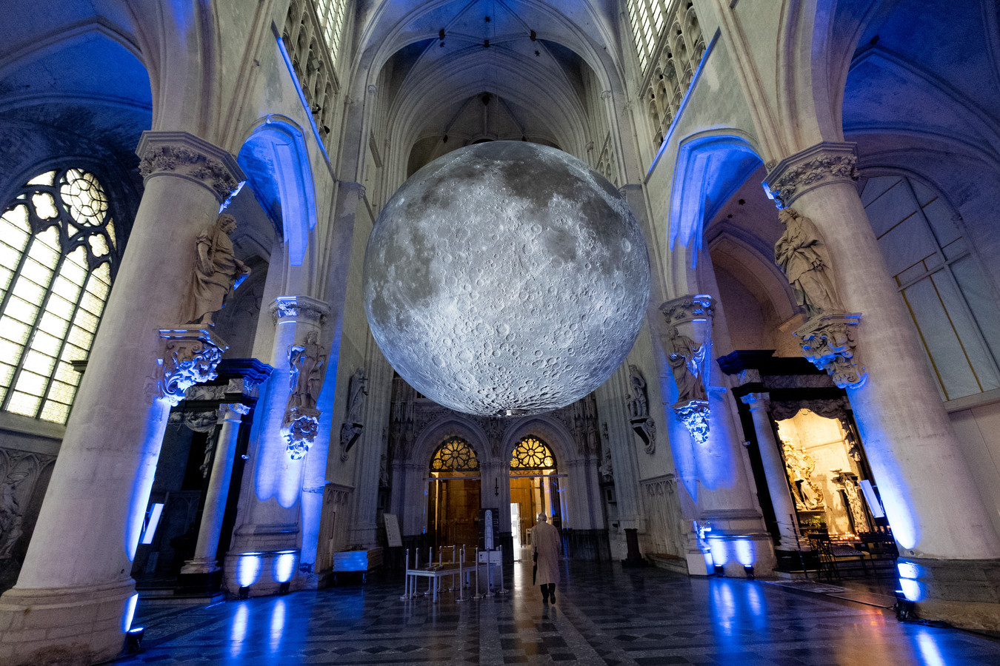
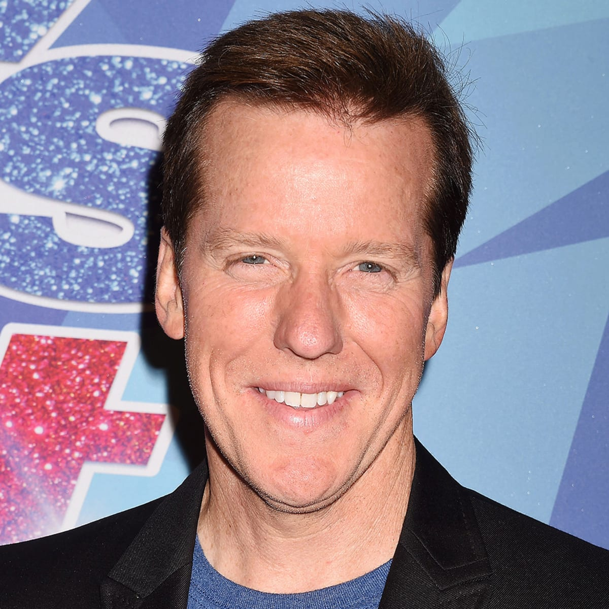
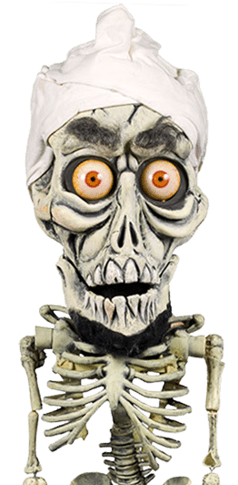
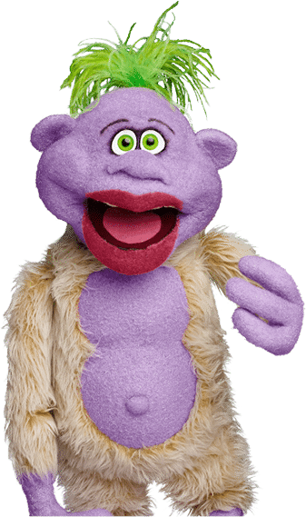
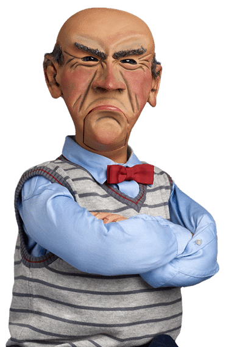
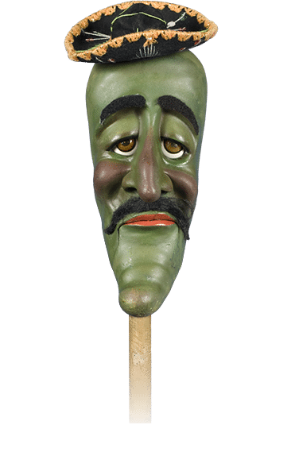
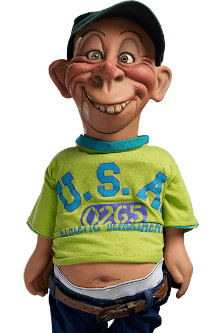
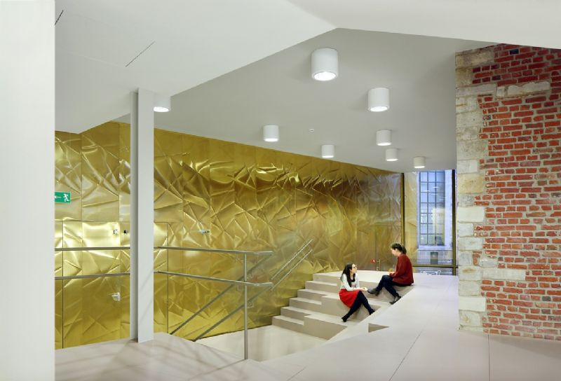

Cultuurhuis
DE MAAN
DE MAAN bouwt voort op de lange traditie van het Mechels Stadspoppentheater, dat in 1948 door poppentheaterpionier Jef Contryn werd opgericht. Louis Contryn, de zoon van Jef, zette de traditie daarna verder. DE MAAN blijft een huis waar iedereen welkom is en waar beeldend theater vanuit de meest diverse hoeken gevierd wordt. Met zijn zeer lange en rijke traditie in het figurentheater wil het op zoek blijven gaan naar die spannende grens waar oude technieken en nieuwe technologieën elkaar ontmoeten en mekaar naar een hoger niveau tillen. Niet enkel figuren, humor, speelsheid, het onverwachte, het vreemde en het magische zijn kernwoorden voor ons theater, maar ook de kritische blik op de wereld rondom ons is essentieel binnen dit huis. Kunst wordt een feest dat samen gevierd mag worden of aanleiding geeft tot een gesprek in de vorm van o.a. voorstellingen, installaties, festivals en workshops.


Jeff Dunham
Jeff Dunham is een Amerikaans buikspreker en stand-upcomedian. Hij heeft in talloze shows en televisieprogramma's opgetreden, waaronder The Tonight Show en Comedy Central Presents. In 2009 kreeg hij zijn eigen show getiteld The Jeff Dunham Show.

Achmed
Toen Dunham dit verwarde skelet introduceerde, zette hij de wereld in brand... eigenlijk stak hij zichzelf in brand, waarna hij zichzelf per ongeluk opblies, en binnen de kortste keren werd hij 's werelds enige geliefde dode terrorist.

Peanut
Peanut is de sidekick van komiek/buikspreker Jeff Dunham. Hij is waanzinnig en snel, ondeugend maar lief, manisch en oneindig energiek. Zelf beschreven als een komisch genie, zal Peanut zeker iedereen aan het lachen maken. Voor kinderen is hij schattig en grappig. Voor tieners is hij cool, hip en oneerbiedig. Voor volwassenen is hij off-the-wall en heerlijk maf, en ze respecteren hem, vooral omdat hij GEEN respect voor hen heeft.

Walter
De oude zuurpruim die zegt wat we niet durven te zeggen omdat het hem gewoon niets meer kan schelen. Of het nu een topbedrijf is, een staatsman of een Hollywood-beroemdheid, Walter heeft ze allemaal gezegd: "Hou je bek!", en ze blijven allemaal terugkomen voor meer.

José
José Jalapeño on a Stick kwam per stick naar de Verenigde Staten. José wist dat de hoop net buiten de grens tussen de VS en Mexico lag, dus begon hij naar het noorden te huppelen. Dat klopt... hij hinkelde naar hoop. En José sprong de grens over naar de VS, om erachter te komen dat zijn ouders in Los Angeles zijn geboren, maar hem bevallen tijdens een vakantie in Mexico. Hij was volkomen legaal. José is een kalmerende kracht onder de kofferbende, misschien omdat hij altijd moe is. José Jalapeño on a Stick is een pratende Jalapeño … OP EEN STEEK!

Bubba J
Bubba J zegt graag dat hij twee liefdes heeft: zijn land, zijn bier en NASCAR. Oké, dus hij kan niet tellen, maar Bubba J is erg trots op zijn redneck-erfgoed. Hij glimlacht bij de gedachte dat hij altijd het kostbare 'ongelukje' van zijn moeder zal zijn. Hij is een goede oude jongen die opgroeide in een woonwagenpark in de beroemde 'tornado-steeg' van het zuiden, en momenteel is hij tussen twee banen in. Als alles volgens zijn plan verloopt, blijft hij zo.
Data
beeldsmederij DE MAAN
Minderbroedersgang 3 - 2800 Mechelen
Uren:
23u | 2u | 5u
015 200 200
contact@DEMAAN.be
